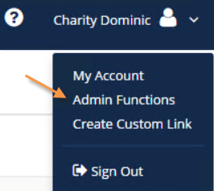
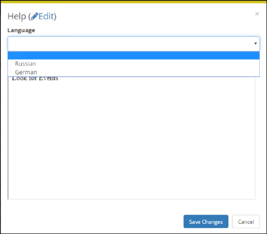

Tip: Depending on your organization, configuration in the EMS Desktop Client may need to be performed by a different type of System Administrator than configuration and text customization in the the {{product_webapp}}.
Since the {{product}} Desktop Client is the "backbone" for all editions of EMS, such as {{product_webapp}} and {{product_emsk}}, it enables you to customize the text that appears to users of those applications in your organization. This help text displays on various pages in {{product_webapp}}, {{product_emsk}}, {{product_emso}}, {{product_cpi}}, and the EMS Floorplan Utility. As the {{product}} administrator, you can configure this help text in {{product}}, or if you are assigned to an appropriate everyday user security template (which has administrator access), you can configure it directly in {{product_webapp}}.
|
|
Tip: Depending on your organization, configuration in the EMS Desktop Client may need to be performed by a different type of System Administrator than configuration and text customization in the the {{product_webapp}}. |
Follow the instructions below to enable custom help text for {{product_webapp}} and/or {{product_emsk}}.
|
|
Tip:You can view all help text including the text not in use: select Obsolete. Obsolete Help Text is displayed in red and italics in the Help Text window. |

Once Help Text customization is enabled in the EMS Desktop Client, System Administrators in the {{product_webapp}} can follow the instructions below to customize the applications help text. First, you enable the feature, then you navigate to each page in {{product_webapp}} that you wish to customize and enter help text.




|
|
Tip: Options in the Language dropdown are controlled by another Administrator setting, Language Translations. |